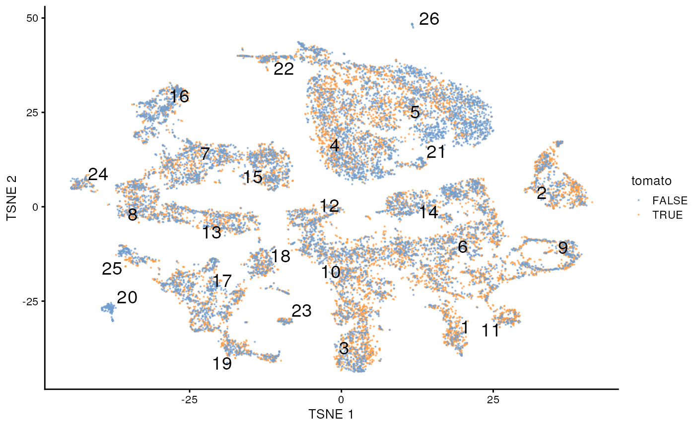

G. Differential Expression in Bioconductor
Source:vignettes/g_osca_differential_expression.Rmd
g_osca_differential_expression.RmdOrchestrating Single-Cell Analysis with Bioconductor
OSCA – an amazing resource!
Differential expression
This script is derived from the OSCA Multi-Sample book, Chapter 4: DE analyses between conditions. See the book for full details.
Initial analysis
## load data
library(MouseGastrulationData)
sce.chimera <- WTChimeraData(samples=5:10)
sce.chimera
#> class: SingleCellExperiment
#> dim: 29453 20935
#> metadata(0):
#> assays(1): counts
#> rownames(29453): ENSMUSG00000051951 ENSMUSG00000089699 ...
#> ENSMUSG00000095742 tomato-td
#> rowData names(2): ENSEMBL SYMBOL
#> colnames(20935): cell_9769 cell_9770 ... cell_30702 cell_30703
#> colData names(11): cell barcode ... doub.density sizeFactor
#> reducedDimNames(2): pca.corrected.E7.5 pca.corrected.E8.5
#> mainExpName: NULL
#> altExpNames(0):
## feature annotation
library(scater)
rownames(sce.chimera) <- uniquifyFeatureNames(
rowData(sce.chimera)$ENSEMBL, rowData(sce.chimera)$SYMBOL
)
## qc
drop <- sce.chimera$celltype.mapped %in% c("stripped", "Doublet")
sce.chimera <- sce.chimera[,!drop]
## normalization
sce.chimera <- logNormCounts(sce.chimera)
## variance modeling
library(scran)
dec.chimera <- modelGeneVar(sce.chimera, block=sce.chimera$sample)
chosen.hvgs <- dec.chimera$bio > 0
## merge batches
library(batchelor)
set.seed(01001001)
suppressWarnings({
merged <- correctExperiments(
sce.chimera,
batch=sce.chimera$sample,
subset.row=chosen.hvgs,
PARAM=FastMnnParam(
merge.order=list(
list(1,3,5), # WT (3 replicates)
list(2,4,6) # td-Tomato (3 replicates)
)
)
)
})
## cluster
g <- buildSNNGraph(merged, use.dimred="corrected")
clusters <- igraph::cluster_louvain(g)
colLabels(merged) <- factor(clusters$membership)
## dimensionality reduction
merged <- runTSNE(merged, dimred="corrected", external_neighbors=TRUE)
merged <- runUMAP(merged, dimred="corrected", external_neighbors=TRUE)Differential expression
Initial observations – labels are similar, whether a ‘td-Tomato’ positive cell or not.
colData(merged) |>
dplyr::as_tibble() |>
dplyr::count(label, tomato) |>
tidyr::pivot_wider(names_from = "tomato", values_from = "n")
#> # A tibble: 26 × 3
#> label `FALSE` `TRUE`
#> <fct> <int> <int>
#> 1 1 129 264
#> 2 2 363 512
#> 3 3 417 632
#> 4 4 1255 973
#> 5 5 1444 753
#> 6 6 868 1092
#> 7 7 542 398
#> 8 8 476 405
#> 9 9 269 333
#> 10 10 608 604
#> # ℹ 16 more rows
plotTSNE(merged, colour_by="tomato", text_by="label", point_size = .1)
Create pseudo-bulk samples
# Using 'label' and 'sample' as our two factors; each column of the output
# corresponds to one unique combination of these two factors.
summed <- aggregateAcrossCells(
merged,
id=colData(merged)[, c("celltype.mapped", "sample")]
)
summed
#> class: SingleCellExperiment
#> dim: 14699 186
#> metadata(2): merge.info pca.info
#> assays(1): counts
#> rownames(14699): Xkr4 Rp1 ... Vmn2r122 CAAA01147332.1
#> rowData names(3): rotation ENSEMBL SYMBOL
#> colnames: NULL
#> colData names(16): batch cell ... sample ncells
#> reducedDimNames(5): corrected pca.corrected.E7.5 pca.corrected.E8.5
#> TSNE UMAP
#> mainExpName: NULL
#> altExpNames(0):Conclusions
Check out the following for a careful and comprehensive evaluation of single-cell differential expression methods:
Soneson, C., Robinson, M. Bias, robustness and scalability in single-cell differential expression analysis. Nat Methods 15, 255–261 (2018). https://doi.org/10.1038/nmeth.4612
Session information
This document was produced with the following R software:
sessionInfo()
#> R version 4.3.0 (2023-04-21)
#> Platform: x86_64-pc-linux-gnu (64-bit)
#> Running under: Ubuntu 22.04.2 LTS
#>
#> Matrix products: default
#> BLAS: /usr/lib/x86_64-linux-gnu/openblas-pthread/libblas.so.3
#> LAPACK: /usr/lib/x86_64-linux-gnu/openblas-pthread/libopenblasp-r0.3.20.so; LAPACK version 3.10.0
#>
#> locale:
#> [1] LC_CTYPE=en_US.UTF-8 LC_NUMERIC=C
#> [3] LC_TIME=en_US.UTF-8 LC_COLLATE=en_US.UTF-8
#> [5] LC_MONETARY=en_US.UTF-8 LC_MESSAGES=en_US.UTF-8
#> [7] LC_PAPER=en_US.UTF-8 LC_NAME=C
#> [9] LC_ADDRESS=C LC_TELEPHONE=C
#> [11] LC_MEASUREMENT=en_US.UTF-8 LC_IDENTIFICATION=C
#>
#> time zone: Etc/UTC
#> tzcode source: system (glibc)
#>
#> attached base packages:
#> [1] stats4 stats graphics grDevices utils datasets methods
#> [8] base
#>
#> other attached packages:
#> [1] batchelor_1.17.0 scran_1.29.0
#> [3] scater_1.29.0 ggplot2_3.4.2
#> [5] scuttle_1.11.0 MouseGastrulationData_1.15.0
#> [7] SpatialExperiment_1.11.0 SingleCellExperiment_1.23.0
#> [9] SummarizedExperiment_1.31.1 Biobase_2.61.0
#> [11] GenomicRanges_1.53.1 GenomeInfoDb_1.37.1
#> [13] IRanges_2.35.1 S4Vectors_0.39.1
#> [15] BiocGenerics_0.47.0 MatrixGenerics_1.13.0
#> [17] matrixStats_1.0.0
#>
#> loaded via a namespace (and not attached):
#> [1] jsonlite_1.8.5 magrittr_2.0.3
#> [3] ggbeeswarm_0.7.2 magick_2.7.4
#> [5] farver_2.1.1 rmarkdown_2.22
#> [7] fs_1.6.2 zlibbioc_1.47.0
#> [9] ragg_1.2.5 vctrs_0.6.3
#> [11] memoise_2.0.1 DelayedMatrixStats_1.23.0
#> [13] RCurl_1.98-1.12 htmltools_0.5.5
#> [15] S4Arrays_1.1.4 AnnotationHub_3.9.1
#> [17] curl_5.0.1 BiocNeighbors_1.19.0
#> [19] Rhdf5lib_1.23.0 SparseArray_1.1.10
#> [21] rhdf5_2.45.0 sass_0.4.6
#> [23] bslib_0.5.0 desc_1.4.2
#> [25] cachem_1.0.8 ResidualMatrix_1.11.0
#> [27] igraph_1.4.3 mime_0.12
#> [29] lifecycle_1.0.3 pkgconfig_2.0.3
#> [31] rsvd_1.0.5 Matrix_1.5-4.1
#> [33] R6_2.5.1 fastmap_1.1.1
#> [35] GenomeInfoDbData_1.2.10 shiny_1.7.4
#> [37] digest_0.6.31 colorspace_2.1-0
#> [39] AnnotationDbi_1.63.1 rprojroot_2.0.3
#> [41] dqrng_0.3.0 irlba_2.3.5.1
#> [43] ExperimentHub_2.7.1 textshaping_0.3.6
#> [45] RSQLite_2.3.1 beachmat_2.17.8
#> [47] labeling_0.4.2 filelock_1.0.2
#> [49] fansi_1.0.4 httr_1.4.6
#> [51] compiler_4.3.0 bit64_4.0.5
#> [53] withr_2.5.0 BiocParallel_1.35.2
#> [55] viridis_0.6.3 DBI_1.1.3
#> [57] highr_0.10 HDF5Array_1.29.3
#> [59] R.utils_2.12.2 rappdirs_0.3.3
#> [61] DelayedArray_0.27.5 bluster_1.11.1
#> [63] rjson_0.2.21 tools_4.3.0
#> [65] vipor_0.4.5 beeswarm_0.4.0
#> [67] interactiveDisplayBase_1.39.0 httpuv_1.6.11
#> [69] R.oo_1.25.0 glue_1.6.2
#> [71] rhdf5filters_1.13.3 promises_1.2.0.1
#> [73] grid_4.3.0 Rtsne_0.16
#> [75] cluster_2.1.4 generics_0.1.3
#> [77] gtable_0.3.3 R.methodsS3_1.8.2
#> [79] tidyr_1.3.0 metapod_1.9.0
#> [81] BiocSingular_1.17.0 ScaledMatrix_1.9.1
#> [83] utf8_1.2.3 XVector_0.41.1
#> [85] ggrepel_0.9.3 BiocVersion_3.18.0
#> [87] pillar_1.9.0 stringr_1.5.0
#> [89] limma_3.57.4 BumpyMatrix_1.9.0
#> [91] later_1.3.1 dplyr_1.1.2
#> [93] BiocFileCache_2.9.0 lattice_0.21-8
#> [95] bit_4.0.5 tidyselect_1.2.0
#> [97] locfit_1.5-9.8 Biostrings_2.69.1
#> [99] knitr_1.43 gridExtra_2.3
#> [101] edgeR_3.43.4 xfun_0.39
#> [103] statmod_1.5.0 DropletUtils_1.21.0
#> [105] stringi_1.7.12 yaml_2.3.7
#> [107] evaluate_0.21 codetools_0.2-19
#> [109] tibble_3.2.1 BiocManager_1.30.21
#> [111] cli_3.6.1 uwot_0.1.14
#> [113] xtable_1.8-4 systemfonts_1.0.4
#> [115] munsell_0.5.0 jquerylib_0.1.4
#> [117] Rcpp_1.0.10 dbplyr_2.3.2
#> [119] png_0.1-8 parallel_4.3.0
#> [121] ellipsis_0.3.2 pkgdown_2.0.7
#> [123] blob_1.2.4 sparseMatrixStats_1.13.0
#> [125] bitops_1.0-7 viridisLite_0.4.2
#> [127] scales_1.2.1 purrr_1.0.1
#> [129] crayon_1.5.2 rlang_1.1.1
#> [131] cowplot_1.1.1 KEGGREST_1.41.0